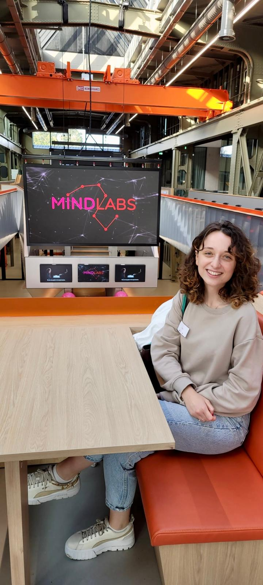

PhD Student in Neuroendocrinology · University of Lille
Eiffel Excellence Scholar (2025–2028)

I am a PhD student in Neuroendocrinology at the University of Lille, working in the Lille Neuroendocrinology group under the supervision of Dr. Konstantina Chachlaki.
My academic background combines cognitive science, artificial intelligence, and computational neuroscience. I am particularly interested in how inflammatory processes following preterm birth interact with neuroendocrine functioning, and how computational approaches can help model these mechanisms.
| Degree | Main Courses | Skills Acquired | Tools & Methods |
|---|---|---|---|
|
BSc Cognitive Science & AI Tilburg University |
Advanced Python Programming Machine Learning Deep Learning Computer Vision Cognitive Neuroscience |
Programming foundations Data analysis & feature extraction EEG signal understanding Reproducible scientific workflows |
Python, NumPy Scikit-learn MNE-Python Git |
|
MSc (Research) Brain & Cognitive Sciences University of Amsterdam |
Computational Cognitive Neuroscience Neural & Cognitive Modelling Neuroimaging (BOLD MRI) Self-Supervised Learning (Literature Thesis) |
Computational modelling of neural systems Statistical inference in neuroscience EEG & fMRI analysis Critical assessment of ML methods |
PyTorch Pandas / SciPy Matplotlib / Seaborn Graph-based approaches |
|
PhD Neuroendocrinology University of Lille |
Neuroendocrinology Inflammation & brain development Animal experimentation & surgery |
Experimental design in animal models Translational neuroscience Integration of biological and computational data Scientific writing and project management |
Animal models (mouse) Experimental neuroscience techniques Python-based analysis pipelines |
Download my CV here.
Email: ilaria.gavetti@gmail.com
LinkedIn:
linkedin.com/in/ilariagavetti